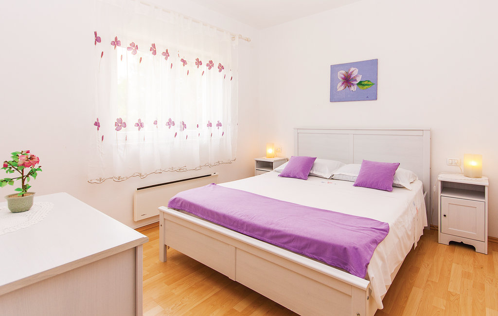
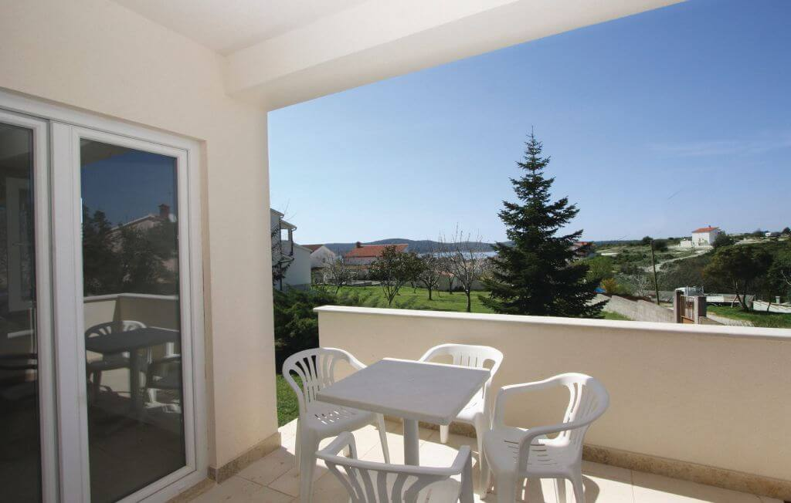

Kényelmes kiindulópont
Az apartman teret, magánszférát és konyhát biztosít. Ideális pároknak, családoknak és társaságoknak, akik a saját tempójukban szeretnék felfedezni Pulát és az isztriai partvidéket, és könnyen beilleszthetnek a hétbe egy hajókirándulást is.

Újdonság: luxusapartman Fažanában
Vadonatúj luxusapartman Fažanában, mindössze 700 méterre a tengertől. Fažana a Brioni-szigetekkel szemben fekszik, és Pulától csak rövid autóútra van. Fényképekről, a szabad időpontokról és az Ön időpontjára érvényes árról érdeklődjön nálunk.

Ami általában az árban van
- Ingyenes WiFi
- Ingyenes parkolás
- Klíma
- Teljesen felszerelt konyha
- Mosogatógép, mosó- és szárítógép
- Kávéfőző
- Terasz vagy erkély a legtöbb apartmanban
Hol szálljon meg Pulában
A legnépszerűbb részek a történelmi városközpont, Verudela, Stoja és a körülöttük húzódó part, ahol strandok, éttermek és látnivalók percek alatt elérhetők. A strandok az apartmantól függően általában autóval vagy kerékpárral 5–15 percre vannak.